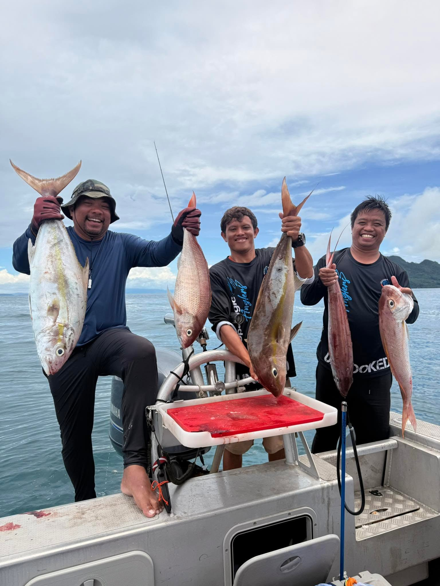

01
Morning
Golden Hour Session
Duration
6 Hours
Session Time
5:00 AM – 11:00 AM
A focused daylight session for guests who prefer an early departure and a shorter offshore run. This window is commonly selected for sunrise activity and morning fishing conditions.
Best for
Early starters and first-time offshore guests
Environment
Cooler temperatures and sunrise visibility
Trip character
Focused, efficient, and daylight-based